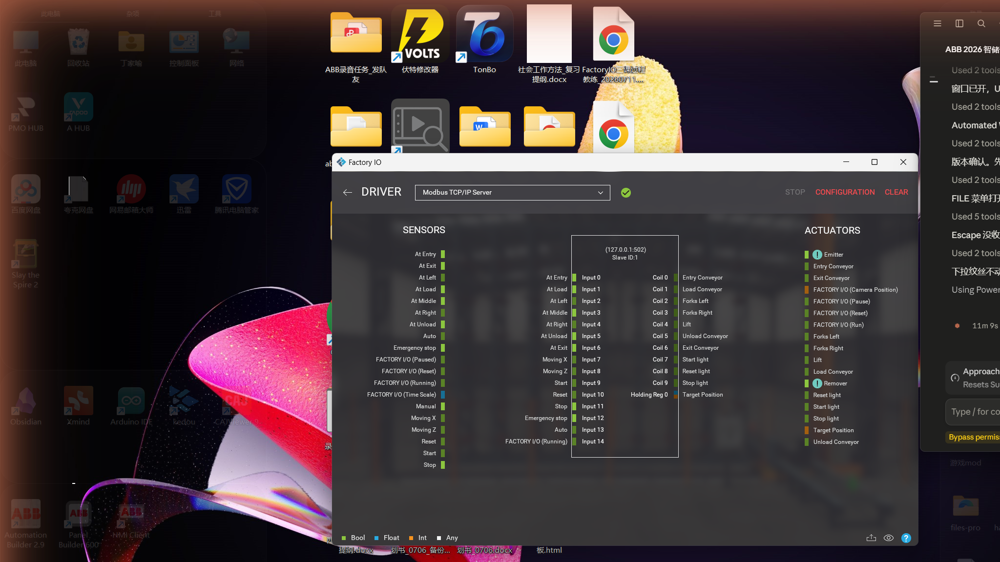

Modbus 直控链路可用(点表 15 DI / 10 Coil / 1 HR 全量映射)
✅ 已证实
原始文件完整路径l2_factoryio/img/F2_modbus_server_default_mapping_0712.png;l2_factoryio/img/F2_ultimate_edition_scene_loaded_0712.png;l2_factoryio/io_map.md
采集时间2026-07-12 22:03(文件 mtime,与文件名 _0712 后缀一致)
限制条件仅本机回环(Software Loopback);网卡曾默认落 Clash 虚拟网卡(已修,见 io_map 头注)